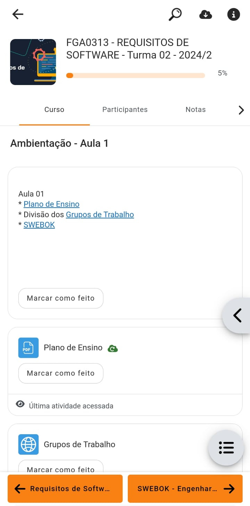
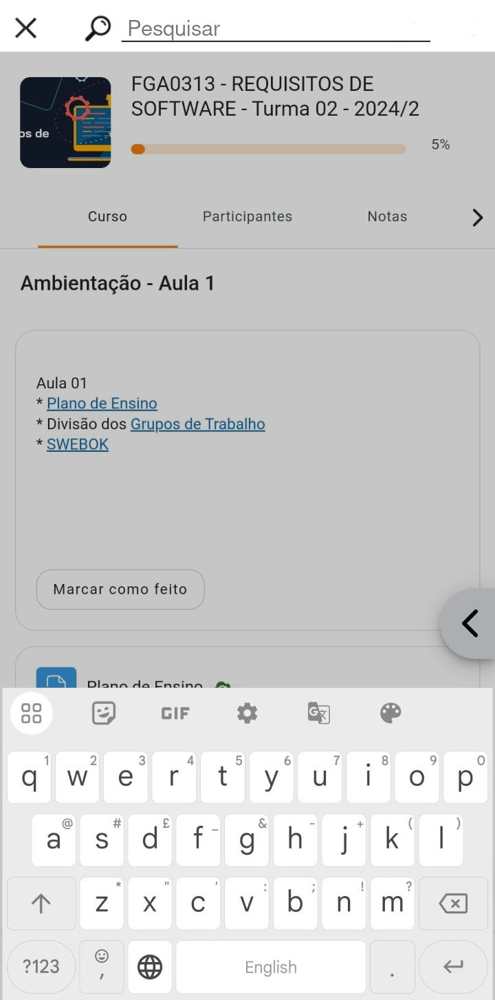

Protótipos de Requisitos Não Implementados¶
Introdução¶
Validação em software, de acordo com [SERRANO, SERRANO, 2017], é a confirmação de que o produto é aquele desejado pelo usuário.
Para possibilitar a validação acerca o projeto, foi enviado um e-mail contatando a empresa e uma fala pela equipe de suporte. Além disso, foram desenvolvidos protótipos de alta fidelidade com base nos requisitos não implementados, a fim de oferecer visões sobre possíveis melhoras e novas funcionalidades no sistema.
Requisitos não implementados escolhidos¶
A tabela 1, a seguir, apresenta os requisitos não implementados escolhidos para a prototipação.
Tabela 1 — Tabela com os requisitos não implementados escolhidos.
| Código | Tipo de Requisito | Descrição do Requisito | Foi implementado? | Origem |
|---|---|---|---|---|
| RE09 | Requisito Funcional | O sistema permite que alunos visualizem as turmas em que já foram cadastrados (arquivadas) | NÃO | ANA13, ANA19 |
| RE21 | Requisito Funcional | O sistema deve possuir um sistema de busca, dentro das disciplinas, para facilitar e simplificar a navegação dos usuários. | NÃO | ENT07 |
| RE25 | Requisito Não Funcional | O sistema deve possuir uma auto-compactação de arquivos se recebê-los exceder o tamanho máximo do arquivo. | NÃO | ENT13 |
| RE28 | Requisito Funcional | O sistema permite a realização de aulas síncronas por chamas de vídeo | NÃO | ANA17 |
| RE31 | Requisito não Funcional | Encontrar a barra de busca de turmas é facilmente localizável e intuitiva | NÃO | ENC03 |
Fonte: Autores
Protótipos de Alta Fidelidade¶
Turmas arquivadas¶
A figura 1, a seguir, apresenta o prototipo de alta fidelidade desenvolvido a partir do requisito não implementado RE09: O sistema permite que alunos visualizem as turmas em que já foram cadastrados (arquivadas).
Figura 1 — Protótipo para o requisito RE09: Turmas arquivadas.

Fonte: Rodrigo Orlandi (Autor)
Barra de busca¶
As figuras 2 e 3, a seguir, apresentam os protótipos de alta fidelidade desenvolvidos a partir dos requisitos não implementados RE21: O sistema deve possuir um sistema de busca, dentro das disciplinas, para facilitar e simplificar a navegação dos usuários; e RE31: Encontrar a barra de busca de turmas é facilmente localizável e intuitiva.
Figura 2 — Protótipo para os requisitos RE21 e RE31: Ícone de busca na barra de tarefas.

Fonte: Laís Cecília (Autora)
Figura 3 — Protótipo para os requisitos RE21 e RE31: Overlay de busca.

Fonte: Laís Cecília (Autora)
Compactação automática¶
A figura 4, a seguir, apresenta o protótipo de alta fidelidade desenvolvido a partir do requisito não implementado RE25: O sistema deve possuir uma auto-compactação de arquivos se recebê-los exceder o tamanho máximo do arquivo.
Note a notificação na parte inferior da tela, além do tamanho do arquivo mostrado como o tamanho comprimido, seguido do tamanho original entre parênteses.
Figura 4 — Protótipo para o requisito RE09: Compactação de arquivos.

Fonte: Laís Cecília (Autora)
Aulas síncronas on-line¶
As figuras 5 a 7, a seguir, apresentam os protótipos desenvolvidos a partir do requisito não implementado RE28: O sistema permite a realização de aulas síncronas por chamas de vídeo.
Destas, as figuras 5 e 6 mostram protótipos de alta fidelidade de insíginias que indicam que uma aula síncrona está ocorrendo.
Figura 5 — Protótipo para o requisito RE28: Insígnia na página "Meus Cursos".
Fonte: Laís Cecília (Autora)
Figura 6 — Protótipo para o requisito RE28: Insígnia na página do curso de Requisitos de Software.

Fonte: Laís Cecília (Autora)
Por sua vez, a figura 7 apresenta um protótipo de média fidelidade de como seria a chamada de vídeo. Aplicando-se padrões conhecidos do formato, que incluem o feed de vídeo do apresentador, os participantes e o bate-papo.
Figura 7 — Protótipo para o requisito RE28: Aula síncrona em decorrimento.
Fonte: Laís Cecília (Autora)
Resposta do Moodle¶
Inicialmente, foi realizada uma pesquisa por um e-mail de contato do Moodle por meio de buscas no Google, mas não foi encontrado algum canal de contato além do suporte técnico.
O Moodle foi contatado pela equipe para possível validação por meio do contato com a equipe de suporte, no site principal. Foi aberto um ticket de atendimento no dia 30 de Janeiro de 2025, como pode ser conferido na figura 8, a seguir.
Figura 9 — Print da não autorização de logar no sistema. *
 https://requisitos-de-software.github.io/2024.2-Moodle/Entregas
https://requisitos-de-software.github.io/2024.2-Moodle/Entregas
Rodrigo Orlandi (Autor)
Mais contato com o Moodle por meio do e-mail help@moodle.com está sendo tentado.
Referência¶
| # | Fonte |
|---|---|
| 1 | SALES, André Barros de. Plano_de_Ensino RE 022024 Turma 02 v1. UnB Gama (FCTE). Disponível em: https://aprender3.unb.br/pluginfile.php/2972537/mod_resource/content/2/Requisitos%20-%20Aula%20023.pdf. Acesso em: 03/02/2025. |
Histórico¶
| Versão | Descrição | Autor | Revisor | Revisado | Data |
|---|---|---|---|---|---|
| v1.0 | Página Criada | Rodrigo Orlandi, Laís Cecília | Esther Sousa | 03/02/2025 | |
| v1.1 | Correções, +RE25 | Laís Cecília | Esther Sousa | 08/02/2025 |